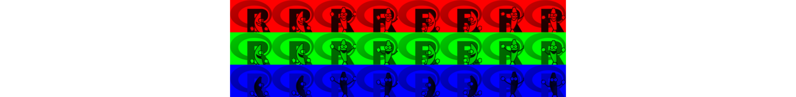
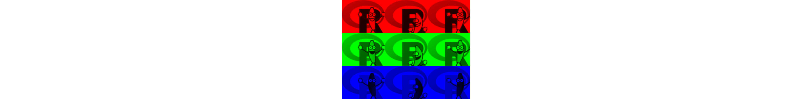

Reading and Writing Images
2021-07-19
Source:vignettes/reading-and-writing-images.Rmd
reading-and-writing-images.RmdReading TIFF files
Check out the following video:

As you can see, it’s a colour video of a banana dancing in front of the R logo. Hence, it has colour channel (red, green and blue) and frame (a video is comprised of several frames) information inside. I have this video saved in a TIFF file.
path_dancing_banana <- system.file("img", "Rlogo-banana.tif",
package = "ijtiff")
print(path_dancing_banana)
#> [1] "/cache/ijtiff/img/Rlogo-banana.tif"To read it in, you just need read_tif() and the path to the image.
pacman::p_load(ijtiff, magrittr)
img_dancing_banana <- read_tif(path_dancing_banana)
#> Reading Rlogo-banana.tif: an 8-bit, 78x100 pixel image of
#> unsigned integer type. Reading 3 channels and 8 frames . . .
#> Done.Let’s take a peek inside of img_dancing_banana.
print(img_dancing_banana)
#> 78x100 pixel ijtiff_img with 3 channels and 8 frames.
#> Preview (top left of first channel of first frame):
#> [,1] [,2] [,3] [,4] [,5] [,6]
#> [1,] 255 255 255 255 255 255
#> [2,] 255 255 255 255 255 255
#> [3,] 255 255 255 255 255 255
#> [4,] 255 255 255 255 255 255
#> [5,] 255 255 255 255 255 255
#> [6,] 255 255 255 255 255 255
#> ── TIFF tags ───────────────────────────────────────────────────────────────────
#> • bits_per_sample: 8
#> • samples_per_pixel: 3
#> • sample_format: uint
#> • planar_config: contiguous
#> • rows_per_strip: 78
#> • compression: deflate
#> • software: ijtiff package, R 4.0.0
#> • color_space: black is zeroYou can see it’s a 4-dimensional array. The last two dimensions are 3 and 8; this is because these are the channel and frame slots respectively: the image has 3 channels (red, green and blue) and 8 frames. The first two dimensions tell us that the images in the video are 78 pixels tall and 100 pixels wide. The image object is of class ijtiff_img. This guarantees that it is a 4-dimensional array with this structure. The attributes of the ijtiff_img give information on the various TIFF tags that were part of the TIFF image. You can read more about various TIFF tags at https://www.awaresystems.be/imaging/tiff/tifftags.html. To read just the tags and not the image, use the read_tags() function.
Let’s visualize the constituent parts of that 8-frame, colour TIFF.

There you go: 8 frames in 3 colours.
Reading only certain frames
It’s possible to read only certain frames. This can be a massive time and memory saver when working with large images.
Suppose we only want frames 3, 5 and 7 from the image above.
img_dancing_banana357 <- read_tif(path_dancing_banana, frames = c(3, 5, 7))
#> Reading Rlogo-banana.tif: an 8-bit, 78x100 pixel image of
#> unsigned integer type. Reading 3 channels and 3 frames . . .
#> Done.Let’s visualize again.

Just in case you’re wondering, it’s not currently possible to read only certain channels.
More examples
If you read an image with only one frame, the frame slot (4) will still be there:
path_rlogo <- system.file("img", "Rlogo.tif", package = "ijtiff")
img_rlogo <- read_tif(path_rlogo)
#> Reading Rlogo.tif: an 8-bit, 76x100 pixel image of unsigned
#> integer type. Reading 4 channels and 1 frame . . .
#> Done.
dim(img_rlogo) # 4 channels, 1 frame
#> [1] 76 100 4 1
class(img_rlogo)
#> [1] "ijtiff_img" "array"
display(img_rlogo)You can also have an image with only 1 channel:
path_rlogo_grey <- system.file("img", "Rlogo-grey.tif", package = "ijtiff")
img_rlogo_grey <- read_tif(path_rlogo_grey)
#> Reading Rlogo-grey.tif: a 32-bit, 76x100 pixel image of
#> floating point type. Reading 1 channel and 1 frame . . .
#> Done.
dim(img_rlogo_grey) # 1 channel, 1 frame
#> [1] 76 100 1 1
display(img_rlogo_grey)Writing TIFF files
To write an image, you need an object in the style of an ijtiff_img object (see help("ijtiff_img", package = "ijtiff")). The basic idea is to have your image in a 4-dimensional array with the structure img[y, x, channel, frame]. Then, to write this image to the location path, you just type write_tif(img, path).
path <- tempfile(pattern = "dancing-banana", fileext = ".tif")
print(path)
#> [1] "/tmp/Rtmpdzgg0S/dancing-banana607497fb9ce.tif"
write_tif(img_dancing_banana, path)
#> Writing dancing-banana607497fb9ce.tif: an 8-bit, 78x100 pixel
#> image of unsigned integer type with 3 channels and 8 frames .
#> . .
#> Done.Reading text images
Note: if you don’t know what text images are, see vignette("text-images", package = "ijtiff").
You may have a text image that you want to read (but realistically, you might never).
path_txt_img <- system.file("img", "Rlogo-grey.txt", package = "ijtiff")
txt_img <- read_txt_img(path_txt_img)
#> Reading 76x100 pixel text image 'Rlogo-grey.txt' . . .
#> Done.Writing text images
Writing a text image works as you’d expect.
write_txt_img(txt_img, path = tempfile(pattern = "txtimg", fileext = ".txt"))
#> Writing txtimg60767628ce9.txt: a 76x100 pixel text image with 1 channel and 1 frame . . .
#> Done.